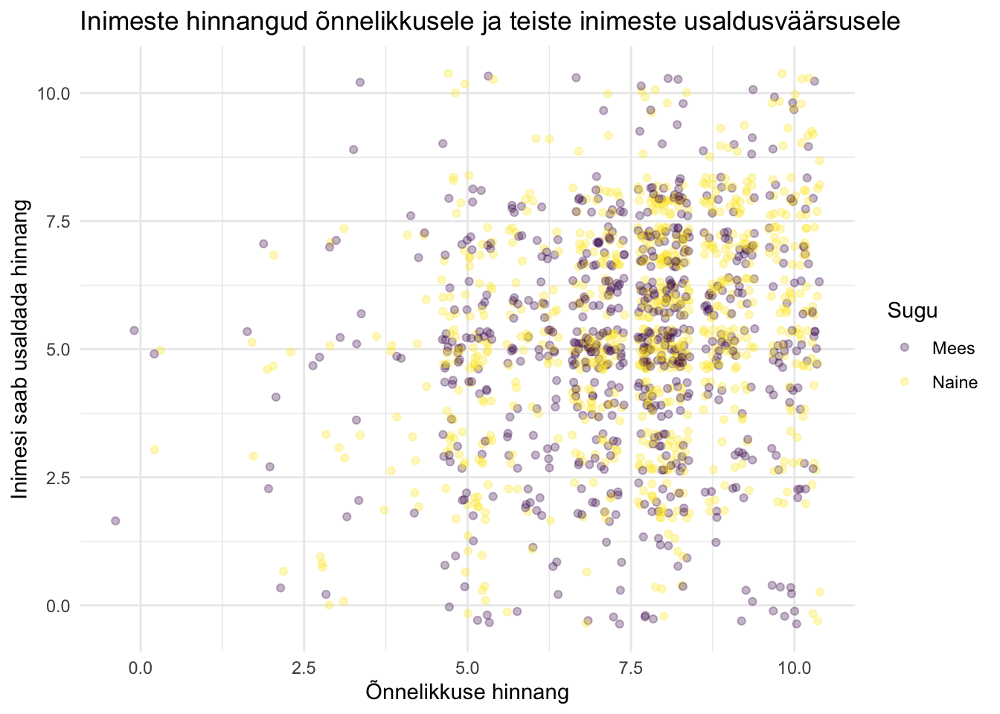
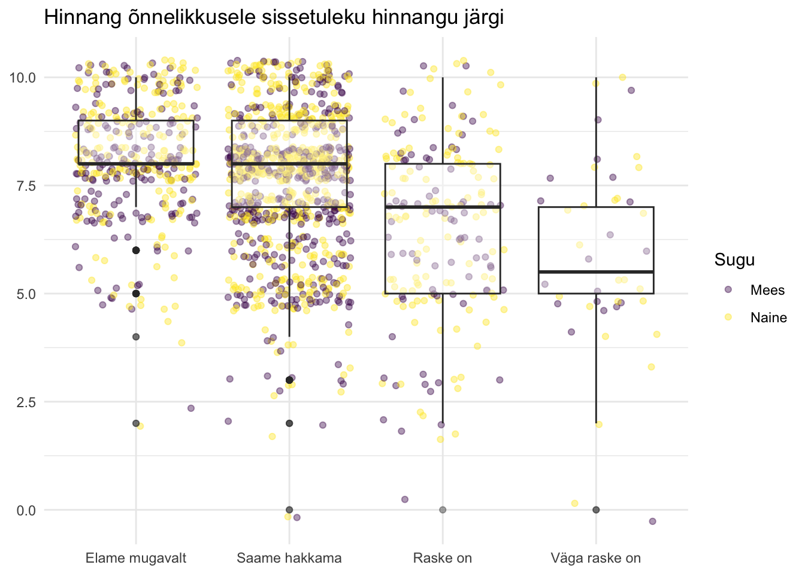

Code
andmed<-read_csv("ESS_10_valik.csv")See peatükk annab ülevaate, kuidas võrrelda R-is arvulise tunnuse väärtusi erinevate tunnuste või gruppide vahel ehk kuidas teha t-test-i, Kruskal-Wallise testi ja kuidas R-is teha diseprsioonianalüüsi.
Andmeid on mõnikord lihtsam uurida (ja esitleda) piltide kaudu. Siin peatükis on jooniste koodid on osaliselt peidetud (vajuta kolmnurgal, et kood avada), kuna selle peatüki eesmärk on pigem näidata R-i koodi võrdlusülesannete jaoks. Vajadusel loe jooniste koostamisest juurde siit.
Kasutan siin analüüsimeetodite tutvustamiseks Euroopa Sotsiaaluuringu (edaspidi ESS) andmeid, mis on kogutud Eesti inimeste kohta uuringu 10. voorus. Andmed on võimalik alla laadida ESS andmete portaalist. Siin peatükis olen teinud 10. voorust väljavõtte paari tunnuse kohta1.
ESS andmeid on võimalik tarbida ka otse ESS-portaalis, kuid R-i kasutama õppimiseks tasub ESS-portaali konto teha ja sobiv andmestik alla laadida.
andmed<-read_csv("ESS_10_valik.csv")Iga analüüs algab tunnustega tutvumisega. Vajadusel vaata peatükke:
Rootalu, K. (2014). T-test. K. Rootalu, V. Kalmus, A. Masso, ja T. Vihalemm (toim), Sotsiaalse analüüsi meetodite ja metodoloogia õpibaas. https://samm.ut.ee/t-test/
Oletame, et me uurime õnnelikuks olemist ja meil on mingi ettekujutus sellest, kui õnnelikud inimesed olla võiksid. Me teame, et ESS uuringus küsiti inimestelt õnnelikuks olemise kohta skaalal nullist kümneni (10=“väga õnnelik”).
Tunnus “happy” tähistab küsimust “Kui õnnelikuks Te kõike kokku võttes end peate?”
Vaatame tunnuse jaotust.
summary(andmed$happy) Min. 1st Qu. Median Mean 3rd Qu. Max. NA's
0.000 7.000 8.000 7.499 9.000 10.000 1 Saame teada, et keskmine hinnang on ürpris kõrge (7,5).
boxplot(andmed$happy)Meie arvame aga, et Eesti inimesed on pigem “keskmiselt õnnelikud” ning ESS vastajate hulka sattusidki kõik need üksikud õnnelikud inimesed. Mingi ajalooline teadmine on, et tegelik õnnelikuse keskmine skoor kogu Eesti peale tuleb kusagil number 6 lähedal.
Teeme t-testi käsuga t.test(), et teada saada kas meie oletus peab paika. Kui kindlad võime olla, et üldpopulatsiooni tegelik keskmine on võrdne kuuega ja kui me kordame küsitlust uue valimiga saame keskmiseks skooriks 6?
t.test(andmed$happy,
mu=6)
One Sample t-test
data: andmed$happy
t = 33.787, df = 1540, p-value < 2.2e-16
alternative hypothesis: true mean is not equal to 6
95 percent confidence interval:
7.412002 7.586052
sample estimates:
mean of x
7.499027 Saame teada, et meie oletus ei pea paika: “true mean is not equal to 6” ning saame väita 95% kindlusega, et tegelik keskmine skoor jääb vahemikku 7,4 kuni 7,6. \(p\) väärtus väga madal (\(p\) < 0,00).
Soovi korral saab salvestada testi tulemused eraldi objekti ja kasutada salvestatud infot kas edasises analüüsis või tulemuste esitlemisel. Objekti salvestatud infot saab vaadata käsuga attributes().
ttest<-t.test(andmed$happy,
mu=6)
attributes(ttest)$names
[1] "statistic" "parameter" "p.value" "conf.int" "estimate"
[6] "null.value" "stderr" "alternative" "method" "data.name"
$class
[1] "htest"Näiteks soovin saada salvestatud objekti usaldusvahemikud.
ttest$conf.int[1] 7.412002 7.586052
attr(,"conf.level")
[1] 0.95Nüüd ma soovin vaadata, kas mehed ja naised on sama õnnelikud ehk võrrelda kahe grupi vahel ühe numbrilise tunnuse jaotust.
Ma näen, et mehi ja naisi on enam-vähem sama palju ning mehed on pisut pessimistlikumalt vastanud.
andmed%>%
drop_na(happy)%>%
group_by(gndr)%>%
summarise(vastajaid=n(),
kesk=round(mean(happy)),
sd=sd(happy))# A tibble: 2 × 4
gndr vastajaid kesk sd
<chr> <int> <dbl> <dbl>
1 Mees 692 7 1.72
2 Naine 849 8 1.76T-test eeltöö hulgas on vaja välja selgitada, kas standardhälve väärtused on kahe grupi puhul sarnased või erinevad. Seda saab teha ka käsuga aggregate().
aggregate(happy ~ gndr, andmed, sd) gndr happy
1 Mees 1.718297
2 Naine 1.756174Standardhälvete vahe on kahe grupi puhul peaaegu olematu ning seepärast kasutan t.test() käsu sees var.equal = TRUE. Pane tähele, et täpsustan käsu sees ka t-testi tüüpi.
TRUE asemel FALSE.
Two Sample t-test
data: andmed$happy by andmed$gndr
t = -2.277, df = 1539, p-value = 0.02293
alternative hypothesis: true difference in means between group Mees and group Naine is not equal to 0
95 percent confidence interval:
-0.37754618 -0.02809936
sample estimates:
mean in group Mees mean in group Naine
7.387283 7.590106 Tulemustest saame teada, et mehed ja naised hindavad enda õnnelikuse astet erinevalt ning 95% kindlusega saame öelda, et meeste keskmine hinnang õnnelikusele tuleb 0,38 kuni 0,03 punkti naiste omast madalam ( \(p\)<0,05).
Tulemusi saab esitleda pildil, et näidata kui erinevad või sarnased keskmiste väärtused on.
pilt1<-andmed%>%
drop_na(happy, gndr)%>%
ggplot(aes(happy,
fill=gndr))+
geom_boxplot(alpha=0.3)+
coord_flip()+
scale_x_continuous(breaks = c(2, 4, 6, 8))+
labs(x="",
y="")+
guides(fill="none")+
theme_light()+
theme(axis.ticks = element_blank(),
axis.text = element_blank())+
scale_fill_viridis_d()
pilt2<-andmed%>%
drop_na(happy, gndr)%>%
ggplot(aes(happy,
fill=gndr))+
geom_density(alpha=0.3)+
scale_x_continuous(breaks = c(2, 4, 6, 8))+
labs(title="Meeste ja naiste hinnangud",
x="Õnnelikuse hinnang",
y="",
fill="Sugu")+
theme_light()+
theme(axis.ticks = element_blank(),
axis.text = element_blank(),
legend.position = "top")+
scale_fill_viridis_d()
library(patchwork)
pilt2 | pilt1Paariviisilist t-testi saab kasutada siis, kui on soov võrrelda nt samade inimeste erinevate tunnuste keskmisi. Inimeste käest küsiti (tunnus “pplhlp”) “Mida Te arvate, kas enamuse ajast püüavad inimesed olla teiste suhtes abivalmid või hoolivad nad ennekõike iseendast?”
0 = “Inimesed hoolivad ennekõike iseendast” ja 10 = “Inimesed püüavad enamasti teiste suhtes abivalmid olla”.
Mõnes-mõttes oleks loogiline arvata, et õnnelikud inimesed usuvad, et inimesed nende ümber on ilusad ja head. Eestis on päris õnnelikud inimesed ja nad võiks ka teisi inimesi usaldusväärseks pidada. Tunnuste omavahelisel võrdlemisel näeme, et vastajaid ei kipu uskuma, et inimesed püüavad enamasti teiste suhtes abivalmid olla.
andmed%>%
select(happy, pplhlp)%>%
summary() happy pplhlp
Min. : 0.000 Min. : 0.000
1st Qu.: 7.000 1st Qu.: 4.000
Median : 8.000 Median : 5.000
Mean : 7.499 Mean : 5.253
3rd Qu.: 9.000 3rd Qu.: 7.000
Max. :10.000 Max. :10.000
NA's :1 NA's :2 Seda ei paista välja ka järgmisel pildil. Ka väga õnnelikud inimesed hindavad inimeste abivalmidust päris madalalt.
andmed%>%
drop_na(happy, pplhlp, gndr)%>%
ggplot(aes(happy, pplhlp))+
geom_jitter(alpha=0.3,
aes(color=gndr))+
labs(title="Inimeste hinnangud õnnelikkusele ja teiste inimeste usaldusväärsusele",
x="Õnnelikkuse hinnang",
y="Inimesi saab usaldada hinnang",
color="Sugu")+
theme_minimal()+
scale_color_viridis_d()
Teeme paariviisilise t-testi, et selgitada välja samade inimeste hinnangute erinevust. Peame käsu sees täpsustama testi tüüpi paired=TRUE.
t.test(andmed$happy, andmed$pplhlp,
paired=TRUE)
Paired t-test
data: andmed$happy and andmed$pplhlp
t = 35.616, df = 1538, p-value < 2.2e-16
alternative hypothesis: true mean difference is not equal to 0
95 percent confidence interval:
2.125625 2.373401
sample estimates:
mean difference
2.249513 Saame teada, et võime 95% kindlusega saame väita, et hinnangud õnnelikkusele ja inimeste abivalmidusele ei ole sarnased. Ükskõik kui õnnelikud inimesed ise on, hindav nad enda õnnelikuks olemist 2,1 kuni 2,4 punkti kõrgemalt kui seda, et teised inimesed püüavad abivalmid olla.
Keskmiste erinevus tunnuste vahel tuli välja juba tunnustega tutvumise etapis, kui kasutasin käsku summary(). paariviisiline t-test vaatab lisaks erinevuse olulisust.
Tooding, L.-M. (2014). Dispersioonianalüüs. K. Rootalu, V. Kalmus, A. Masso, ja T. Vihalemm (toim), Sotsiaalse analüüsi meetodite ja metodoloogia õpibaas. https://samm.ut.ee/dispersioonanalyys/
Mõnikord on võrreldavaid gruppe rohkem kui kaks. Siis on sobilik teha keskmiste võrdluseks dispersioonianalüüs.
Võib-olla hinnangute erinevus ei sõltugi vastaja soost, vaid sellest, kuidas ta ise oma sissetulekuga toime tuleb (tunnus “hincfel”)? Kas on võimalik, et paremal elujärjel olevad inimesed peavadki end õnnelikumaks kui inimesed, kellel on oma sissetulekute juures väga keeruline toime tulla? Kas saame öelda, et õnn peitub rahas?
Andmestikus on kategoriaalne tunnus “hincfel”, mis annab aimu nende sissetulekute suuruse kohta. Inimestelt küsiti järgmist:
Milline järgnevatest kirjeldustest vastab Teie arvates kõige paremini Teie leibkonna praegusele sissetulekute tasemele?
andmed$hincfel<-fct_relevel(andmed$hincfel,
"Elame mugavalt praeguse sissetuleku juures",
"Saame hakkama praeguse sissetuleku juures",
"Praeguse sissetuleku juures on raske hakkama saada",
"Praeguse sissetuleku juures on väga raske hakkama saada")Testi eeltöö tähendab alati tunnustega tutvumist.
andmed%>%
drop_na(happy)%>%
group_by(hincfel)%>%
summarise(vastajaid=n(),
kesk=round(mean(happy)),
sd=sd(happy))# A tibble: 4 × 4
hincfel vastajaid kesk sd
<fct> <int> <dbl> <dbl>
1 Elame mugavalt praeguse sissetuleku juures 389 8 1.37
2 Saame hakkama praeguse sissetuleku juures 917 8 1.64
3 Praeguse sissetuleku juures on raske hakkama saada 193 6 2.04
4 Praeguse sissetuleku juures on väga raske hakkama saada 42 6 2.27Pane tähele, et gruppide suurused on väga erinevad (42 vs 917).
Ideaalsel juhul kodeeriks grupid ümber enam-vähem sama suureks, kuid praegu R-is töötamise näitamiseks las jääda nii. Lihtsalt pea meeles, et R ei tee sinu tööle kriitikat ja arvutab ikkagi seda, mida tal arvutada lased.
Tehniliselt oleks õigem teha Kurskal-Wallis test.
oneway.test() käsuga saab teha dispersioonianalüüsi, kus tuleb esmalt öelda sõltuv tunnus (“happy”) ja grupeeriv tunnus (“hincfel”).
oneway.test(andmed$happy~andmed$hincfel)
One-way analysis of means (not assuming equal variances)
data: andmed$happy and andmed$hincfel
F = 48.601, num df = 3.00, denom df = 169.57, p-value < 2.2e-16Saame teada, et sissetuleku hinnangu järgi ei ole hinnang õnnelikkusele ühesugune ja seda, et erinevus on statistiliselt oluline. Kahjuks gruppide erinevust selle käsuga ei näe.
Võimalus oleks teha käsuga aov() ja seejärel teha post-hoc test. Post-hoc testi saab teha siin käsuga TukeyHSD()
TukeyHSD() esitab analüüsitulemused neljas grupis:
aov(happy~hincfel, andmed)%>%
summary() Df Sum Sq Mean Sq F value Pr(>F)
hincfel 3 474 158.06 57.88 <2e-16 ***
Residuals 1537 4197 2.73
---
Signif. codes: 0 '***' 0.001 '**' 0.01 '*' 0.05 '.' 0.1 ' ' 1
1 observation deleted due to missingnessJärgnev väljatükk aitab ilmekalt selgitada, miks ei ole hea tunnuste kategooriatele ülipikki nimesid panna. Väljatrükki oleks lihtsam lugeda, kui kategooriate nimed oleks lühemad.
TukeyHSD(aov(happy~hincfel, andmed)) Tukey multiple comparisons of means
95% family-wise confidence level
Fit: aov(formula = happy ~ hincfel, data = andmed)
$hincfel
diff
Saame hakkama praeguse sissetuleku juures-Elame mugavalt praeguse sissetuleku juures -0.6376499
Praeguse sissetuleku juures on raske hakkama saada-Elame mugavalt praeguse sissetuleku juures -1.6672350
Praeguse sissetuleku juures on väga raske hakkama saada-Elame mugavalt praeguse sissetuleku juures -2.2681479
Praeguse sissetuleku juures on raske hakkama saada-Saame hakkama praeguse sissetuleku juures -1.0295851
Praeguse sissetuleku juures on väga raske hakkama saada-Saame hakkama praeguse sissetuleku juures -1.6304980
Praeguse sissetuleku juures on väga raske hakkama saada-Praeguse sissetuleku juures on raske hakkama saada -0.6009129
lwr
Saame hakkama praeguse sissetuleku juures-Elame mugavalt praeguse sissetuleku juures -0.8948038
Praeguse sissetuleku juures on raske hakkama saada-Elame mugavalt praeguse sissetuleku juures -2.0414223
Praeguse sissetuleku juures on väga raske hakkama saada-Elame mugavalt praeguse sissetuleku juures -2.9584197
Praeguse sissetuleku juures on raske hakkama saada-Saame hakkama praeguse sissetuleku juures -1.3661580
Praeguse sissetuleku juures on väga raske hakkama saada-Saame hakkama praeguse sissetuleku juures -2.3011249
Praeguse sissetuleku juures on väga raske hakkama saada-Praeguse sissetuleku juures on raske hakkama saada -1.3245347
upr
Saame hakkama praeguse sissetuleku juures-Elame mugavalt praeguse sissetuleku juures -0.3804960
Praeguse sissetuleku juures on raske hakkama saada-Elame mugavalt praeguse sissetuleku juures -1.2930477
Praeguse sissetuleku juures on väga raske hakkama saada-Elame mugavalt praeguse sissetuleku juures -1.5778760
Praeguse sissetuleku juures on raske hakkama saada-Saame hakkama praeguse sissetuleku juures -0.6930122
Praeguse sissetuleku juures on väga raske hakkama saada-Saame hakkama praeguse sissetuleku juures -0.9598711
Praeguse sissetuleku juures on väga raske hakkama saada-Praeguse sissetuleku juures on raske hakkama saada 0.1227088
p adj
Saame hakkama praeguse sissetuleku juures-Elame mugavalt praeguse sissetuleku juures 0.0000000
Praeguse sissetuleku juures on raske hakkama saada-Elame mugavalt praeguse sissetuleku juures 0.0000000
Praeguse sissetuleku juures on väga raske hakkama saada-Elame mugavalt praeguse sissetuleku juures 0.0000000
Praeguse sissetuleku juures on raske hakkama saada-Saame hakkama praeguse sissetuleku juures 0.0000000
Praeguse sissetuleku juures on väga raske hakkama saada-Saame hakkama praeguse sissetuleku juures 0.0000000
Praeguse sissetuleku juures on väga raske hakkama saada-Praeguse sissetuleku juures on raske hakkama saada 0.1422913Kruskal-Wallis test võrdleb keskmiste astak-uid ning sobib kasutada olukordades, kus võrreldavad grupid ei ole ühesuurused. Käsk kruskal.test() toimib põhimõttel, et vajab esmalt sõltuvat ja seejärel grupeerivat tunnust. Andmestiku nimi tuleb öelda koma järel.
kruskal.test(happy~hincfel, andmed)
Kruskal-Wallis rank sum test
data: happy by hincfel
Kruskal-Wallis chi-squared = 135.81, df = 3, p-value < 2.2e-16Kruskal-Wallise test näitab, et gruppide vahel on statistiliselt olulised erinevused. Hii-ruut statistik on 19.1 ja \(p\)<0,01.
PMCMRplusPaketiga MPCMPRplus (Pohlert 2023) saab teha Kruskal-Wallis testi (käsk kruskalTest().
library(PMCMRplus)Test ei õnnestu kui grupeeriv tunnus ei ole faktor. Vaata ka, kuidas tunnuseid ringi kodeerida.
andmed$hincfel<-as_factor(andmed$hincfel)kruskalTest(happy~hincfel, andmed)Warning in kruskalTest.default(c(8, 7, 8, 10, 7, 8, 7, 7, 7, 8, 10, 6, 8, :
Ties are present. Quantiles were corrected for ties.
Kruskal-Wallis test
data: happy by hincfel
chi-squared = 135.81, df = 3, p-value < 2.2e-16Andmete visualiseerimise kohta tuleb eraldi peatükk.
Keskmiste võrdluse esitlemiseks sobib joonisena karp-diagramm, sest tegemist on sisuliselt ju numbrilise tunnuse esitlemisega.
Baaskäsk boxplot() ajaks justkui asja ära, kuid antud hetkel ei mahuta kõikide gruppide nimesid joonisele.
boxplot(andmed$happy~andmed$hincfel)Karpdiagrammi miinuseks on see, et gruppide suurusest jääb ekslik mulje nagu need oleks võrdsed.
Üks võimalus oleks esitleda keskmiste erinevust gruppide vahel nii, et lisada sinna ka vastajaid kujutavad täpikesi. Pilt nüüd kauniks kunstiväärtuseks ei läinud, kuid annab vaatluse all oleva situatsiooni kohta veidi paremini infot edasi.
andmed%>%
ggplot(aes(x=hincfel, y=happy))+
geom_jitter(alpha=0.4, aes(color=gndr))+
geom_boxplot(alpha=0.4)+
ggtitle("Hinnang õnnelikkusele sissetuleku hinnangu järgi")+
labs(color="Sugu")+
scale_x_discrete(labels=c("Elame mugavalt", "Saame hakkama", "Raske on", "Väga raske on"))+
ylab(NULL)+
xlab(NULL)+
theme_minimal()+
scale_color_viridis_d()
Teinekord tasub esitleda tulemusi ka density joonisega.
andmed%>%
drop_na(happy, hincfel)%>%
ggplot(aes(x=happy, fill=hincfel))+
geom_density(alpha=0.4)+
labs(title="Hinnang õnnelikkusele sissetuleku hinnangu järgi",
x="Õnnelikkuse hinnang",
y="",
fill="Sissetuleku hinnang")+
theme_minimal()+
theme(legend.position = c(.35, .75))+
scale_fill_viridis_d()